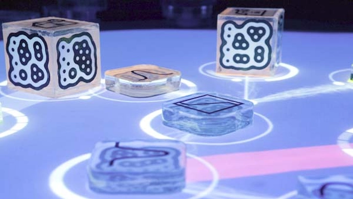
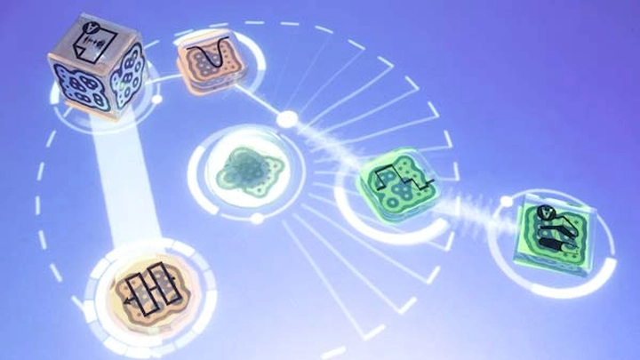
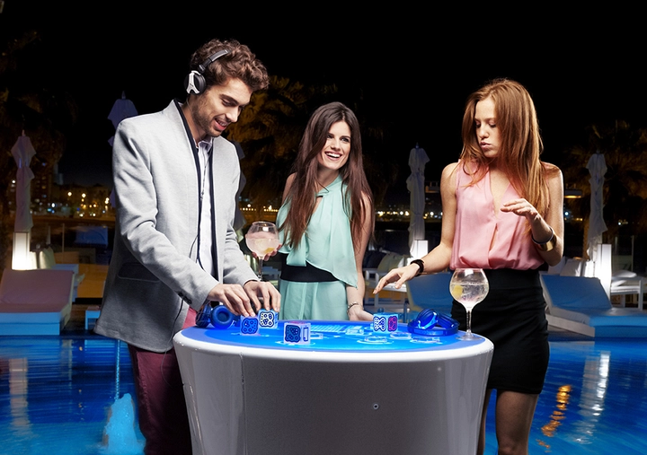
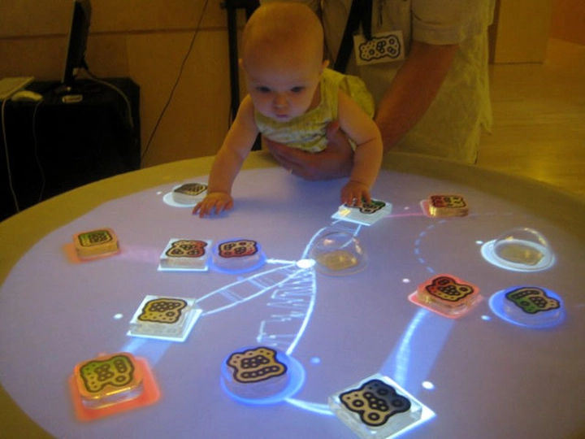
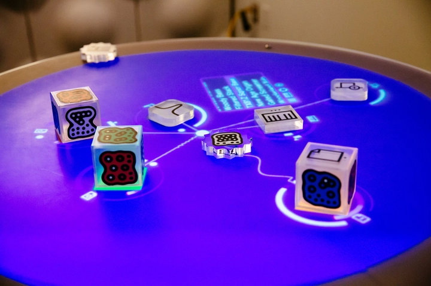

Reactable – Bàn tương tác điện tử đa giác quan cho âm nhạc sáng tạo
Trong kỷ nguyên số, cách chúng ta nghe, tạo và trải nghiệm âm nhạc đã thay đổi đáng kể. Không còn giới hạn trong piano, guitar hay trống, công nghệ hiện đại mang đến những nhạc cụ phi truyền thống, nơi người chơi vừa là nghệ sĩ, vừa là nhà thiết kế âm thanh trực tiếp. Một trong những sáng tạo nổi bật nhất là Reactable, một bàn tương tác điện tử, giúp âm nhạc trở thành trải nghiệm trực quan, sống động và đa giác quan, được áp dụng trong biểu diễn, giáo dục và nghệ thuật tương tác.
1. Giới thiệu về Reactable - Bàn tương tác điện tử
Reactable là một bàn tương tác điện tử tiên tiến, được thiết kế để biến quá trình tạo âm nhạc trở thành một trải nghiệm trực quan, sinh động và đầy tính sáng tạo. Không giống các nhạc cụ truyền thống như piano hay guitar, Reactable cho phép người chơi tương tác trực tiếp với âm thanh thông qua các vật thể vật lý gọi là “pucks”, đặt, xoay, kết nối và di chuyển chúng trên mặt bàn. Mỗi vật thể đại diện cho một yếu tố âm thanh, từ nhịp điệu, melody, bass cho đến hiệu ứng âm thanh, và phần mềm của Reactable sẽ phản hồi ngay lập tức theo các thao tác của người chơi.
Sự kết hợp này giữa âm nhạc điện tử, công nghệ cảm ứng và nghệ thuật tương tác tạo ra một ngôn ngữ âm nhạc hoàn toàn mới, nơi người chơi vừa là nghệ sĩ, vừa là nhà sáng tạo. Reactable không chỉ là công cụ biểu diễn, mà còn là bệ phóng cho các ý tưởng âm nhạc độc đáo, mở rộng khả năng khám phá âm thanh vượt ra ngoài giới hạn của nhạc cụ truyền thống.

Bàn Reactable cũng đặc biệt hấp dẫn ở chỗ mọi thao tác đều trực quan và dễ quan sát, giúp người mới bắt đầu nhanh chóng làm quen, đồng thời vẫn đủ linh hoạt và mạnh mẽ để phục vụ các nghệ sĩ chuyên nghiệp. Nhờ khả năng tương tác trực tiếp với âm thanh và hình ảnh, Reactable mang đến trải nghiệm âm nhạc đa giác quan, kết hợp thị giác, thính giác và xúc giác, tạo ra sự kết nối sâu sắc giữa người chơi, âm nhạc và không gian biểu diễn.
Không chỉ dừng lại ở biểu diễn, Reactable còn được áp dụng trong giáo dục âm nhạc, workshop sáng tạo và nghệ thuật tương tác, giúp người học hiểu về cấu trúc âm nhạc, phối hợp nhịp điệu và khám phá hiệu ứng âm thanh mới thông qua trải nghiệm thực hành. Đây là một minh chứng sống động cho việc công nghệ và nghệ thuật hòa quyện, mở ra những cách thức hoàn toàn mới để cảm nhận, tạo ra và thưởng thức âm nhạc.
2. Nguyên lý hoạt động
Bàn Reactable hoạt động dựa trên sự kết hợp tinh vi giữa cảm biến camera, nhận diện vật thể và phần mềm tổng hợp âm thanh. Mỗi vật thể trên bàn không chỉ là một công cụ điều khiển, mà còn đóng vai trò như một nhạc cụ mini, mang lại các yếu tố âm thanh riêng biệt: từ nhịp điệu, giai điệu, bass cho đến hiệu ứng đặc biệt.
Nguyên lý cơ bản là cảm biến theo dõi vị trí, chuyển động và góc xoay của vật thể, sau đó gửi thông tin này đến phần mềm tổng hợp, nơi âm thanh được tạo ra và thay đổi ngay lập tức theo hành động của người chơi. Khi người chơi di chuyển hoặc xoay vật thể, âm thanh có thể thay đổi cao độ, tốc độ, âm lượng hoặc thêm hiệu ứng lọc, tạo ra trải nghiệm tương tác trực tiếp, sống động và linh hoạt.
Điều đặc biệt là mọi thao tác đều diễn ra theo thời gian thực, giúp người chơi cảm nhận mối liên kết giữa hành động vật lý và phản hồi âm thanh, từ đó tăng tính sáng tạo và khả năng biểu diễn. Nguyên lý này khiến Reactable trở thành một công cụ lý tưởng cho biểu diễn trực tiếp, workshop sáng tạo và các cài đặt nghệ thuật tương tác, nơi người dùng có thể “vẽ nhạc” bằng tay và thấy âm thanh hiện hữu trước mắt mình.
3. Các vật thể tương tác
Các vật thể, hay còn gọi là pucks, là công cụ điều khiển cốt lõi của Reactable. Mỗi puck đại diện cho một thành phần âm thanh riêng, chẳng hạn như bass, melody, trống, hiệu ứng, hoặc các thông số kỹ thuật âm thanh như tốc độ, cao độ, độ vang, hoặc cường độ. Người chơi có thể xếp, kết nối, xoay hoặc di chuyển puck để thay đổi âm thanh theo ý muốn, tạo ra một bản nhạc độc đáo và cá nhân hóa.
Việc sử dụng puck tạo ra cảm giác vừa như chơi nhạc, vừa như điều khiển hình ảnh trực quan, bởi phần mềm hiển thị phản hồi ánh sáng và hình ảnh theo từng thao tác. Nhờ đó, người chơi không chỉ nghe nhạc mà còn thấy nhạc “di chuyển” trên bàn, cảm nhận được nhịp điệu, sự hòa âm và các hiệu ứng âm thanh theo cách trực quan.

Khả năng tùy chỉnh, ghép nối các puck cho phép sáng tạo không giới hạn: từ các bản nhạc đơn giản đến các hiệu ứng phức tạp, từ biểu diễn trực tiếp trên sân khấu đến thử nghiệm âm thanh trong phòng studio. Đây là một trong những điểm làm Reactable trở nên khác biệt hoàn toàn so với nhạc cụ truyền thống.
4. Trải nghiệm đa giác quan
Reactable mang đến trải nghiệm đa giác quan, nơi người chơi vừa nghe, vừa nhìn, vừa thao tác trực tiếp, tạo cảm giác âm nhạc trở thành hiện tượng vật chất và trực quan. Khi di chuyển các puck, âm thanh phản hồi ngay lập tức, đồng thời màn hình hiển thị hình ảnh ánh sáng, màu sắc và chuyển động, khiến người chơi cảm nhận nhạc qua cả thị giác và xúc giác.
Trải nghiệm này khác hoàn toàn với nhạc cụ truyền thống, vốn chỉ dựa vào thính giác và kỹ thuật tay. Reactable cho phép người chơi “chạm vào nhạc”, quan sát sự thay đổi âm thanh theo hành động của mình, đồng thời nhận biết nhịp điệu, cấu trúc và các hiệu ứng theo cách trực quan.
Điều này không chỉ mang lại niềm vui, sự sáng tạo và khám phá âm thanh mới mà còn giúp giáo dục âm nhạc trở nên sinh động, hỗ trợ người học hiểu về phối hợp nhịp điệu, giai điệu và hiệu ứng một cách trực quan. Ngoài ra, trong các cài đặt nghệ thuật tương tác, trải nghiệm đa giác quan này còn kích thích người tham gia tương tác, khám phá và sáng tạo âm nhạc theo cách riêng của họ, biến Reactable thành công cụ nghệ thuật sống động, linh hoạt và hấp dẫn.
5. Ứng dụng trong biểu diễn âm nhạc
Reactable thường xuất hiện trong các buổi biểu diễn nhạc điện tử, festival, không gian nghệ thuật tương tác và triển lãm sáng tạo. Khác với nhạc cụ truyền thống, Reactable cho phép nghệ sĩ tạo nhạc trực tiếp theo thời gian thực, kết hợp hiệu ứng ánh sáng, hình ảnh, chuyển động và phản hồi trực quan.
Điểm đặc biệt là người xem không còn là khán giả thụ động mà trở thành một phần của biểu diễn. Họ có thể tương tác với bàn, thay đổi nhịp điệu, thử nghiệm phối hợp âm thanh, từ đó tạo ra biểu diễn sống động, đa chiều và cá nhân hóa. Điều này biến mỗi buổi trình diễn thành một trải nghiệm không bao giờ lặp lại, nơi âm nhạc, hình ảnh và tương tác trực tiếp hòa quyện, mang đến cảm giác hứng khởi, mới mẻ và đầy sáng tạo.

Reactable cũng giúp nghệ sĩ thử nghiệm các ý tưởng âm nhạc phức tạp mà các nhạc cụ truyền thống khó thực hiện, như ghép nối nhịp điệu, kết hợp melody phức hợp hoặc tạo hiệu ứng âm thanh động, mở rộng khả năng sáng tạo và thể hiện nghệ thuật. Chính vì vậy, Reactable được xem là công cụ biểu diễn hiện đại, lý tưởng cho nghệ sĩ nhạc điện tử, DJ và nghệ thuật trình diễn tương tác.
6. Giáo dục và workshop
Reactable không chỉ phục vụ biểu diễn mà còn là công cụ giáo dục và đào tạo sáng tạo âm nhạc điện tử. Trong môi trường học tập, học sinh, sinh viên có thể thực hành trực tiếp trên bàn tương tác, quan sát phản hồi âm thanh và hình ảnh theo từng thao tác, từ đó hiểu rõ cấu trúc nhịp điệu, phối hợp âm sắc và các hiệu ứng âm thanh.
Phương pháp học này giúp người học khám phá âm nhạc một cách trực quan và sinh động, khác hẳn so với việc học lý thuyết trên sách vở hoặc nghe gián tiếp. Reactable cũng tạo ra không gian tương tác nhóm, nơi học sinh có thể phối hợp cùng nhau, thử nghiệm các bản nhạc và tạo ra trải nghiệm cộng tác, sáng tạo và vui nhộn.

Trong các workshop sáng tạo, Reactable còn giúp người tham gia từ mọi lứa tuổi khám phá khả năng sáng tạo của bản thân, thử nghiệm với nhịp điệu, melody, bass và hiệu ứng, đồng thời học cách kiểm soát âm thanh theo thời gian thực. Điều này không chỉ nâng cao kỹ năng âm nhạc mà còn rèn luyện khả năng tư duy logic, phối hợp tay mắt và phản xạ nhịp điệu, đồng thời kích thích sự tò mò và ham học hỏi.
Nhờ khả năng kết hợp trực quan, thực hành và tương tác, Reactable trở thành công cụ giáo dục âm nhạc hiện đại, giúp học sinh và nghệ sĩ tương lai nắm bắt kiến thức, khám phá âm nhạc và phát triển khả năng sáng tạo toàn diện.
7. Phần mềm hỗ trợ và tính năng kỹ thuật
Bên cạnh bàn vật lý, Reactable đi kèm với phần mềm tổng hợp âm thanh và giao diện trực quan, đóng vai trò như bộ não của hệ thống. Phần mềm này không chỉ nhận diện vị trí, chuyển động và xoay của các puck mà còn tạo, xử lý và phối hợp các tín hiệu âm thanh theo thời gian thực. Nhờ vậy, mọi thao tác trên bàn đều được phản ánh ngay lập tức bằng âm thanh và hình ảnh trực quan, tạo ra trải nghiệm tương tác mượt mà và sống động.
Phần mềm của Reactable còn cung cấp khả năng tùy chỉnh cao, cho phép người chơi cấu hình các hiệu ứng, âm sắc, nhịp điệu, độ vang và các thông số kỹ thuật phức tạp. Nghệ sĩ chuyên nghiệp có thể ghi lại các phiên biểu diễn, lưu trữ cấu hình puck, tạo preset âm nhạc và thậm chí tích hợp với các phần mềm sản xuất nhạc khác như Ableton Live hay Max/MSP.
Ngoài ra, phần mềm còn hỗ trợ hình ảnh trực quan hóa âm thanh, giúp người chơi không chỉ nghe mà còn “nhìn thấy nhạc” dưới dạng đồ thị, ánh sáng hoặc hình động trên màn hình, tăng cường trải nghiệm đa giác quan. Điều này đặc biệt hữu ích trong giáo dục, workshop và trình diễn nghệ thuật tương tác, nơi người học và khán giả có thể trực tiếp quan sát mối liên hệ giữa hành động và âm thanh, từ đó nâng cao khả năng trực quan hóa, sáng tạo và cảm thụ âm nhạc.
8. Kết hợp với nghệ thuật tương tác
Reactable không chỉ là nhạc cụ mà còn là một công cụ nghệ thuật tương tác, mở ra khả năng kết hợp âm nhạc, hình ảnh và chuyển động trong các không gian sáng tạo. Trong các triển lãm, không gian nghệ thuật đương đại hay sự kiện tương tác, Reactable cho phép người tham gia tạo nhạc trực tiếp bằng cử chỉ vật lý, đồng thời quan sát phản hồi hình ảnh và ánh sáng theo từng hành động.

Trải nghiệm này giúp biến người tham gia từ khán giả thụ động thành người sáng tạo trực tiếp, tạo ra sự kết nối sâu sắc giữa hành động, âm thanh và hình ảnh. Bằng cách kết hợp các yếu tố tương tác, nghệ thuật thị giác và âm nhạc, Reactable khơi gợi sự tò mò, kích thích sáng tạo và mang đến trải nghiệm nghệ thuật đa giác quan, không chỉ dành cho nghệ sĩ chuyên nghiệp mà còn cho mọi đối tượng tham gia.
Điều này còn mở ra các hướng ứng dụng mới như:
-
Nghệ thuật giáo dục: giúp học sinh trải nghiệm âm nhạc điện tử một cách trực quan, sinh động.
-
Cài đặt nghệ thuật tương tác: biến âm nhạc thành yếu tố trực quan trong không gian triển lãm.
-
Biểu diễn kết hợp công nghệ: phối hợp âm nhạc, ánh sáng, video mapping và tương tác trực tiếp với khán giả.
Nhờ khả năng tương tác trực quan, phản hồi thời gian thực và trải nghiệm đa giác quan, Reactable đang trở thành một công cụ tiêu biểu cho âm nhạc điện tử và nghệ thuật tương tác, góp phần mở rộng cách thức trải nghiệm, sáng tạo và thưởng thức âm nhạc trong thời đại số.
9. Ưu điểm nổi bật của Reactable
Reactable mang đến nhiều ưu điểm vượt trội so với nhạc cụ truyền thống và các thiết bị âm nhạc điện tử khác. Trước hết, nó cung cấp trải nghiệm âm nhạc trực quan và tương tác trực tiếp, nơi người chơi vừa thao tác vật lý, vừa quan sát âm thanh được phản hồi theo thời gian thực. Điều này giúp tăng tính sáng tạo, khám phá âm thanh và khả năng thử nghiệm các hiệu ứng phức tạp mà các nhạc cụ truyền thống khó có thể thực hiện.
Một ưu điểm khác là tính đa năng và tùy chỉnh cao. Người chơi có thể kết hợp nhiều loại puck, thay đổi âm sắc, nhịp điệu, hiệu ứng và cấu hình âm thanh theo ý muốn, từ đó tạo ra bản nhạc hoàn toàn cá nhân hóa. Reactable còn có thể ghi lại các phiên biểu diễn, lưu preset và kết nối với phần mềm sản xuất nhạc khác, giúp nghệ sĩ mở rộng khả năng sáng tạo và biểu diễn.
Ngoài ra, Reactable là công cụ lý tưởng cho giáo dục và workshop, nhờ khả năng trực quan hóa âm thanh và hình ảnh. Học sinh, sinh viên và người mới chơi có thể nhìn thấy mối quan hệ giữa hành động và âm thanh, từ đó học nhạc nhanh hơn, hiệu quả hơn và đầy hứng thú. Việc kết hợp trải nghiệm đa giác quan cũng giúp nâng cao khả năng phối hợp tay mắt, nhịp điệu và trực giác âm nhạc, đồng thời khuyến khích tư duy sáng tạo và khả năng giải quyết vấn đề trong môi trường âm nhạc.
Nhờ những ưu điểm này, Reactable không chỉ là nhạc cụ mà còn là công cụ biểu diễn, giáo dục và sáng tạo âm nhạc hiện đại, phù hợp với nghệ sĩ, giáo viên, học sinh và cả những người đam mê trải nghiệm âm nhạc tương tác.
10. Xu hướng phát triển tương lai
Tương lai của Reactable và các bàn tương tác điện tử hướng đến việc mở rộng trải nghiệm âm nhạc đa giác quan, tích hợp công nghệ thực tế ảo (VR) và tăng cường (AR). Các phiên bản mới có thể kết hợp hình ảnh 3D, hiệu ứng ánh sáng động và mô phỏng môi trường âm thanh không gian, tạo ra trải nghiệm biểu diễn hoàn toàn nhập vai cho nghệ sĩ và khán giả.
Bên cạnh đó, Reactable cũng được kỳ vọng tích hợp trí tuệ nhân tạo (AI) và học máy, giúp bàn tự động gợi ý hòa âm, phối nhạc hoặc tạo nhịp điệu theo phong cách cá nhân của người chơi. Điều này sẽ mở ra khả năng sáng tạo vượt giới hạn, nơi nghệ sĩ có thể phối hợp với hệ thống để tạo ra bản nhạc độc đáo và phức tạp mà trước đây khó tưởng tượng.
Ngoài biểu diễn và giáo dục, Reactable còn được ứng dụng trong nghệ thuật tương tác, cài đặt triển lãm, workshop và studio sáng tạo, trở thành cầu nối giữa công nghệ, nghệ thuật và trải nghiệm người dùng. Xu hướng phát triển còn hướng đến việc làm cho thiết bị dễ tiếp cận, giá cả hợp lý hơn, mở rộng cơ hội trải nghiệm cho nhiều đối tượng, từ nghệ sĩ chuyên nghiệp đến người yêu nhạc mới bắt đầu.
Tóm lại, Reactable không chỉ là nhạc cụ của hiện tại mà còn là biểu tượng cho tương lai âm nhạc điện tử, nơi công nghệ, sáng tạo và trải nghiệm đa giác quan hòa quyện để mở ra cách thức hoàn toàn mới trong việc thưởng thức, tạo ra và tương tác với âm nhạc.